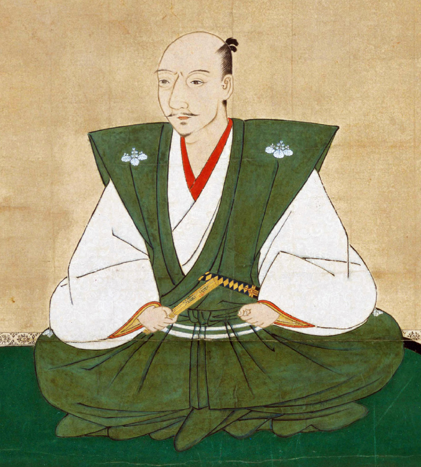
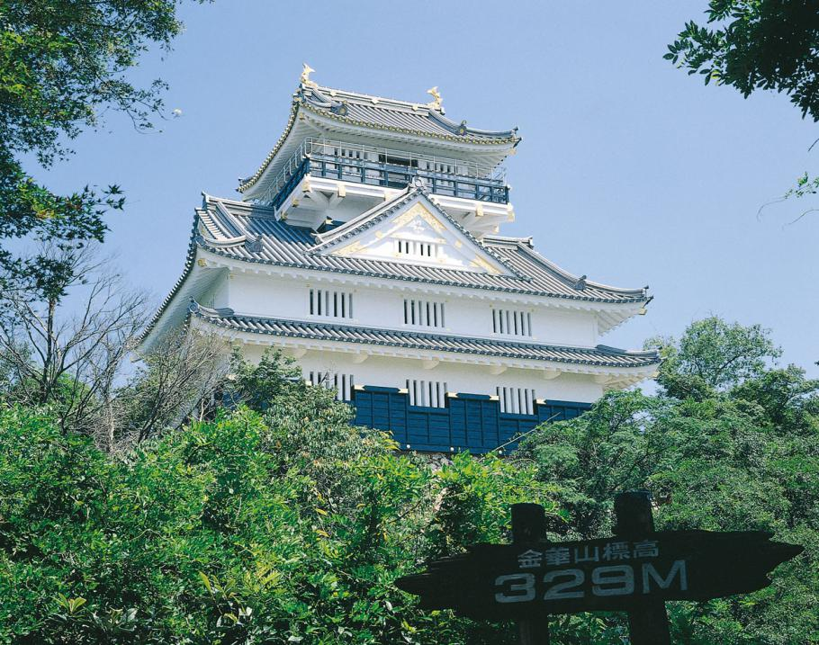
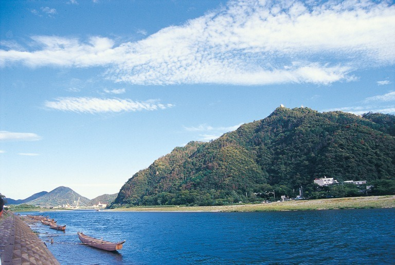
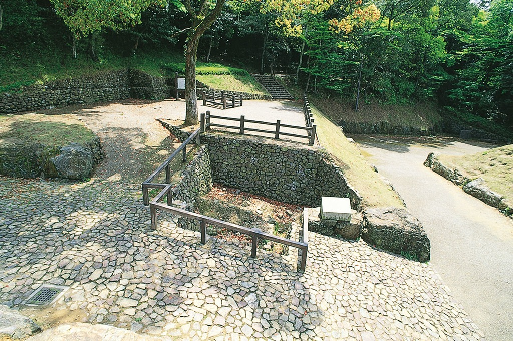
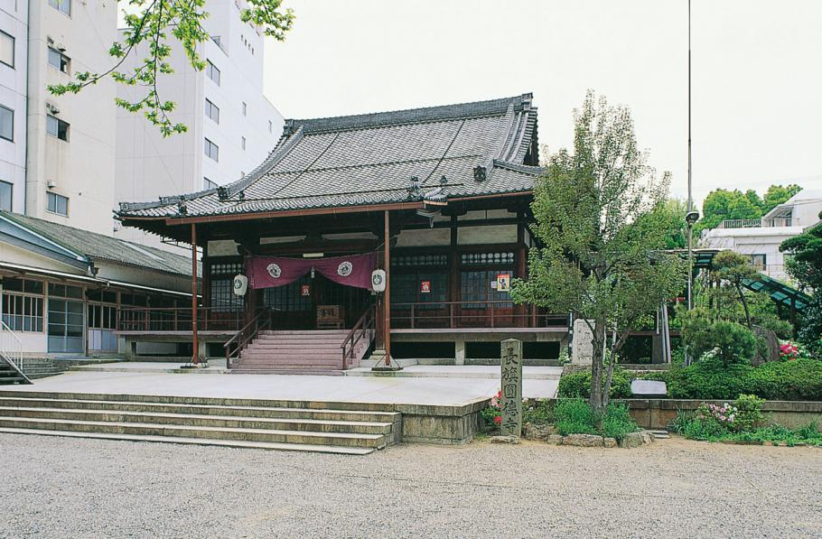
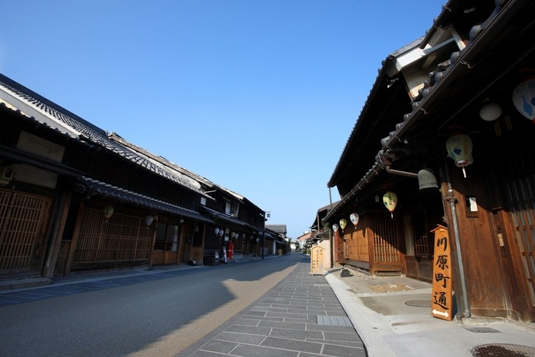
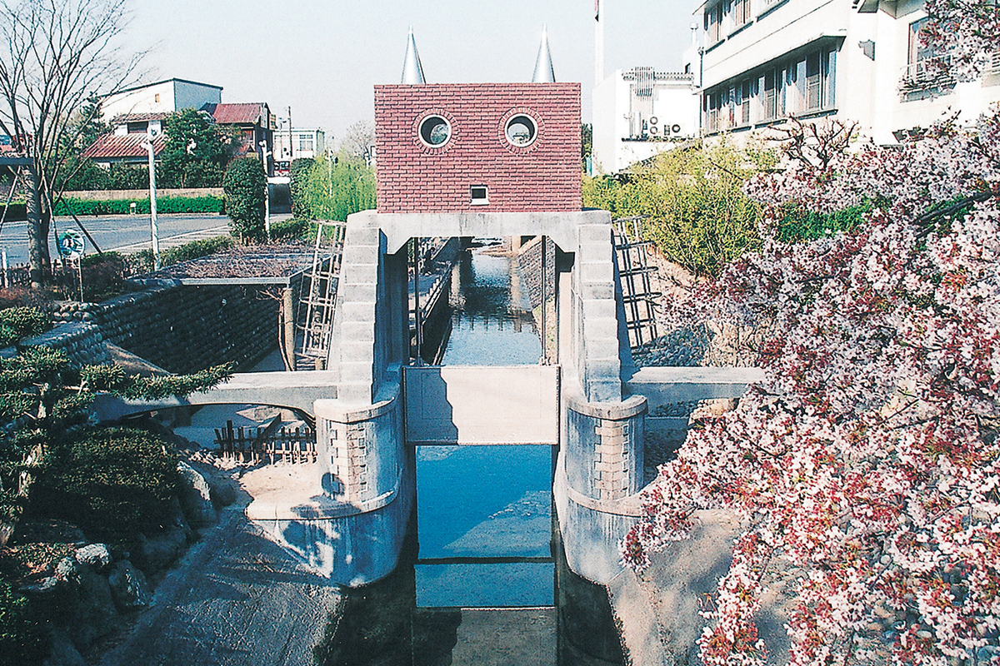
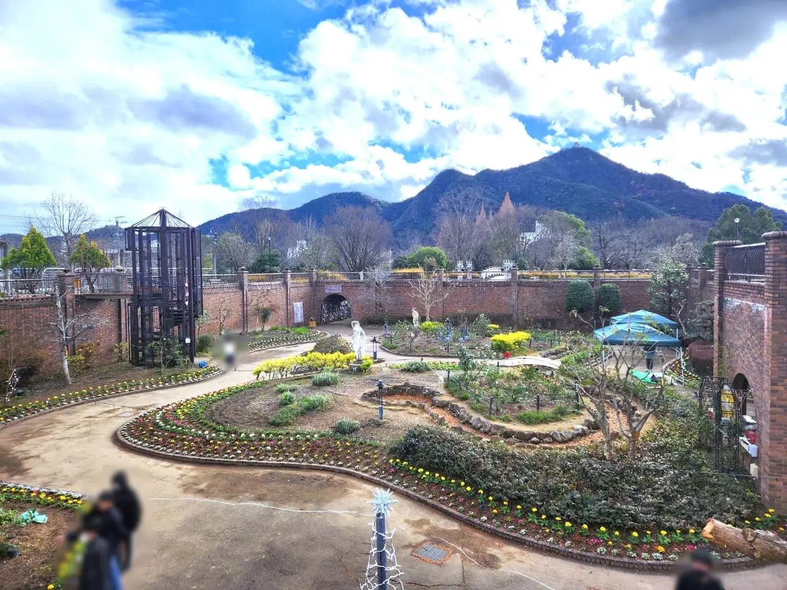
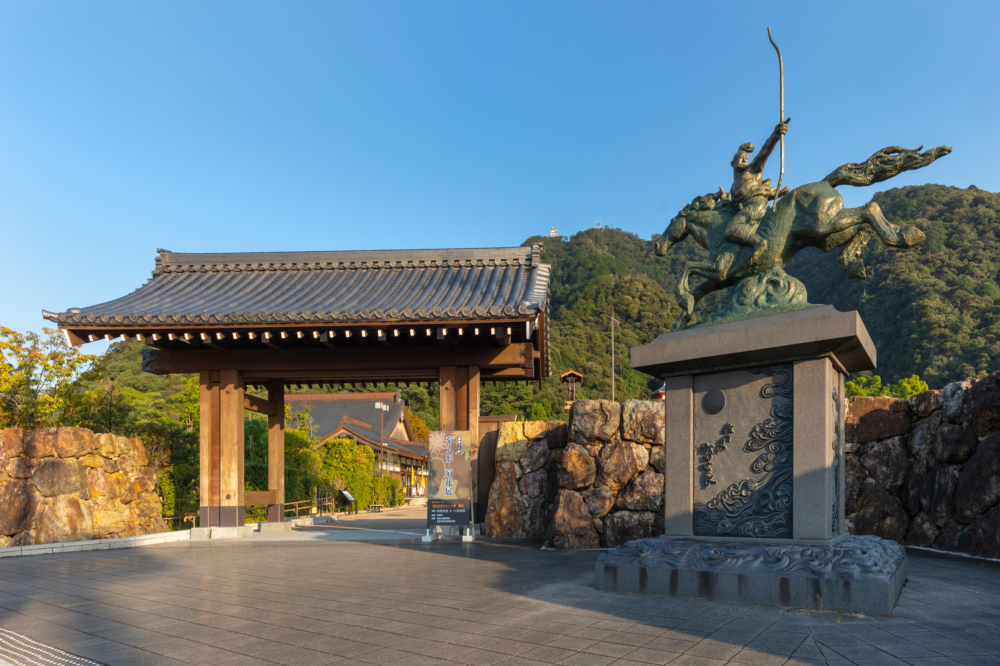
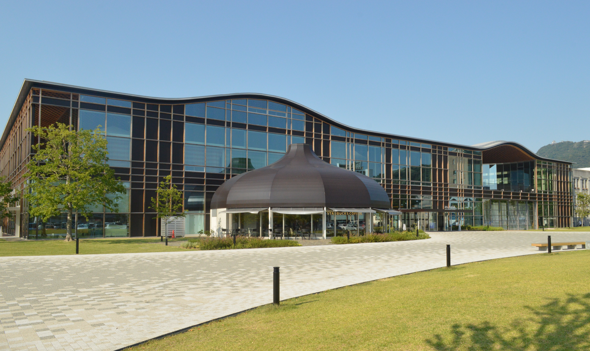

戦国の歴史を感じる岐阜へ
織田信長ゆかりの地を巡ろう
織田信長と岐阜
岐阜県は戦国・織田信長が拠点と
した歴史ある地域です。しかし、岐阜
に住んでいてもその魅力を知らない人
も多いのが現状です。本サイトでは、
織田信長ゆかりの場所を紹介し、岐阜
の歴史や魅力を発信します。

紹介スポット
U

岐阜城
岐阜城の頂上に位置する城 で、織田信長が天下統一を 目指した拠点です。
〈見どころ〉
- 天守からの絶景
- 歴史的展示
金華山
山頂に岐阜城がある山
で、登山やロープウェイ
でアクセス可能
〈見どころ〉
- 自然景観
- ハイキングコース


信長公居館跡
信長が生活していたと
される場所
〈見どころ〉
- 発掘された遺構
- 歴史的価値
円徳寺
信長にゆかりある寺院
〈見どころ〉
- 歴史的建造物
- 静かな雰囲気

フォトギャラリー

川原町

ロボット水門

長良公園

岐阜公園
長良川鵜飼

メディアコスモス
まとめ
このサイトを通じて、織田信長と関係のある岐阜の歴史
スポットに興味を持ち、実際に訪れてみたいと思ってい
ただければ幸いです。
Question
JR岐阜駅北口(バスロータリーのある方)には広場があ り、そこには織田信長の像がありますが、その色は 何色でしょうか？※漢字1文字で入力
コロナ禍にQ1の織田信長像はあるものを身に着けて いました、そのあるものとはなんでしょうか？ ※カタカナ3文字で入力
Answer
おまけ
岐阜×アニメ
岐阜県岐阜市が舞台のアニメ、
僕らはみんな河合荘の
登場人物である河合律
岐阜県へ観光に来た際は、ぜひ
聖地巡礼に行ってみよう！！
Fig.2 『僕らはみんな河合荘』のヒロインである
河合律_模写
岐阜大学キャンパス
キムワイプ
擬人化
Fig.3 このWebサイトを作成した彼(N.K氏)が描いたオリジナルSDキャラ(キムワイプの擬人化)